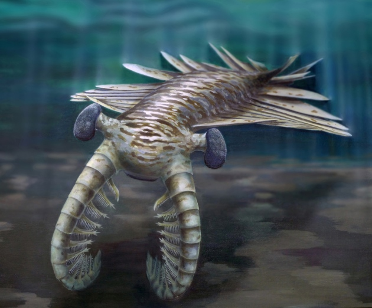

presentation
Les premiers animaux de la Terre sont apparus dans les océans primordiaux il y a plus de 500 millions d'années, marquant le début de la vie complexe. Durant le Cambrien, cette biodiversité s'est développée à un rythme exceptionnel, donnant naissance aux premiers prédateurs et aux organismes à carapace dure, aujourd'hui tous éteints.
devlopment
L'Anomalocaris

L'Anomalocaris : Considéré comme le tout premier grand prédateur des océans. Il se distinguait par ses grands yeux composés, son corps profilé pour la nage et deux imposants appendices tactiles à l'avant de sa tête pour capturer ses proies.
Les Trilobites

Les Trilobites : Une classe emblématique d'arthropodes marins dotés d'un exosquelette rigide divisé en trois lobes. Très diversifiés et abondants au fond des mers, ils ont survécu pendant près de 300 millions d'années avant de disparaître complètement
Le spinosaurus

Le Spinosaurus : Un gigantesque dinosaure carnivore semi-aquatique. Il est célèbre pour la grande "voile" osseuse sur son dos et son crâne allongé semblable à celui d'un crocodile, adapté à la pêche.
Le Mégathérium

Le Mégathérium (Paresseux terrestre) : Un mammifère massif de l'ère glaciaire, de la taille d'un éléphant. Contrairement à ses cousins modernes, il vivait au sol et se dressait sur ses pattes arrière pour manger des feuilles
Conclusion
En somme, l'Ère Cambrienne représente un tournant majeur dans l'histoire de la Terre. À travers l'émergence d'organismes fascinants comme l'Anomalocaris, cette période a posé les bases de la biodiversité marine moderne et a marqué le premier grand chapitre de la vie complexe sur notre planète.